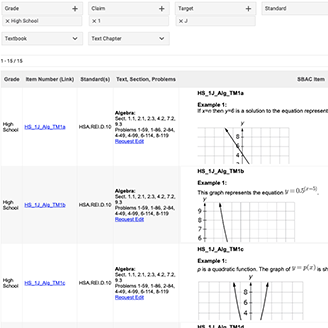

Taylor Llewellyn
Front-end Developer, Programmer, Mathematician, & Problem Solver
About Me
My core process is programming. Even in my prior careers as an actuarial analyst and math teacher I used programming to improve processes and provide resource access to others in my profession. I now want to take the strength I have in programming and apply that to my career every day.
I love solving problems. It isn’t so much the solution that excites me, it is the process. With math, and in programming, there are many different ways to work towards a solution. I like to challenge myself to find a path to the solution that is efficient and elegant. After all, this is where the creativity lies.
Teaching others has always been a passion of mine. Sharing what I know is a key asset when working in a team. Even better than teaching others is learning from others. I want to continue to grow and learn in my career. In programming the limit of what I can learn is endless! This excites me!
When I’m not on the computer, I love to be outdoors. I am fortunate to live close to Mt. Hood, so it is easy to spend my days hiking, backpacking, running, or skiing. In my free time at home I enjoy cooking and I love to build LEGO sets.

Projects
-

Tic-Tac-Toe Terminal Game
A two-person Tic-Tac-Toe game using Python and played by using the terminal.
-
Swan Island Ship Arrivals Website
A website that is currently under development that displays the ships on the Willamette River.
-

State Test Question Filter
A website resource for math teachers that filters state test questions based on criteria. I presented this site at a national conference.
Skills

